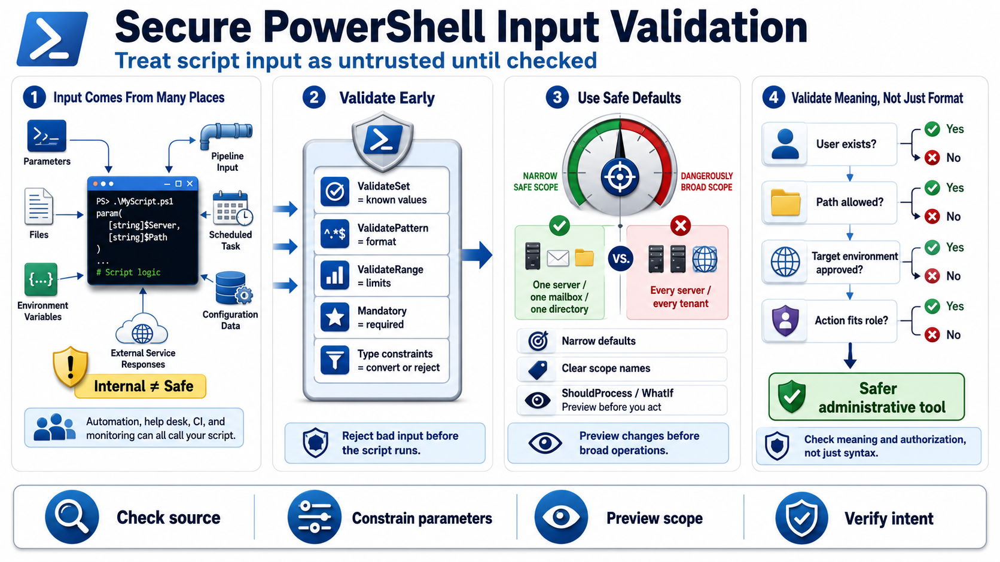

Input Validation and Defensive Parameters
Connecting to LMS... Progress: in progress

Narration
PowerShell scripts receive input from many places: parameters, files, environment variables, pipeline input, scheduled task arguments, configuration data, and external service responses. Internal does not automatically mean safe. A script may be called by another automation job, a help desk technician, a CI pipeline, or a monitoring tool. Defensive scripts treat input as untrusted until it is checked against the script's actual contract.
Parameter validation attributes are a useful first line of defense. ValidateSet restricts a parameter to known values. ValidatePattern can enforce a format when a regular expression is appropriate. ValidateRange can constrain numeric input. Mandatory parameters make required values explicit. Type constraints help PowerShell convert and reject values before the script body runs. These features make valid use easier and invalid use more obvious.
Safe defaults matter. A script that defaults to every server, every mailbox, every tenant, or every directory can do too much when a caller forgets a filter. Prefer narrow defaults, explicit confirmation for broad operations, and clear parameter names that describe scope. Where possible, use ShouldProcess and WhatIf support for scripts that make changes so operators can preview intended work before applying it.
Avoid assumptions about interactive users or trusted input. Automation may run unattended, receive pipeline objects, or consume generated files. Validate not only type and format, but also meaning: does the user name exist, is the path inside the expected location, is the target environment allowed, and is the requested action appropriate for the caller's role. Strong parameters turn scripts from loose command wrappers into safer administrative tools.